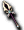

名稱為橘色的是可以附魔的物品。另外，未鑑定名稱是該道具在未鑑定狀態下的名稱。
| 名稱 | 價格 | 限制 | 職業 | Wei | 取得方式 |
 騎士長槍 騎士長槍 | Lv1 | 戰修盜騎聖魔吟 | 4 | 神秘的箱子 | |
| 能力 | 攻20~25、STR+2、HP+20、DAM+2、HIT+7、單手槍 |
| 名稱 | 價格 | 限制 | 職業 | Wei | 取得方式 |
| 勇者長槍 | 200,000 | Lv21 | 戰修盜騎聖魔吟 | 5 |  諾肯叔叔 諾肯叔叔 |
| 能力 | 攻23-30 DAM2% HIT7% HP30 STR2 |
| 備註 | 單手槍 |
| 名稱 | 價格 | 限制 | 職業 | Wei | 取得方式 |
| 魔法勇者長槍 | Lv21 | 戰修盜騎聖魔吟 | 5 | | |
| 能力 | 攻25-31 DAM3% HP40 STR3 |
| 備註 | 騎士用的魔法單手槍 |
| 名稱 | 價格 | 限制 | 職業 | Wei | 取得方式 |
 波波之槍未鑑定名稱：槍 波波之槍未鑑定名稱：槍 | 10 | Lv31 FLv20 | 戰修盜騎聖魔吟 | 22 | |
| 能力 | 攻40~70 HIT+8 |
| 備註 | 波特波特使用過的槍 |
| 名稱 | 價格 | 限制 | 職業 | Wei | 取得方式 |
| 血櫻蝸牛標槍 | 80,000 | Lv31 FLv20 | 戰修盜騎聖魔吟 | 12 | |
| 能力 | 攻5-7 |
| 備註 | 槍，士兵血櫻蝸牛使用的槍。輕巧又好上手 |
| 名稱 | 價格 | 限制 | 職業 | Wei | 取得方式 |
| 強者長槍 | 400,000 | Lv41 | 戰修盜騎聖魔吟 | 7 | |
| 能力 | 攻26～33、HP+50、STR+3、DAM+2、單手槍 |
| 名稱 | 價格 | 限制 | 職業 | Wei | 取得方式 |
| 魔法強者長槍 | Lv41 | 戰修盜騎聖魔吟 | 7 | | |
| 能力 | 攻28~34 STR+4 DAM+3 HP+60 |
| 備註 | 騎士用的魔法單手槍 |
| 名稱 | 價格 | 限制 | 職業 | Wei | 取得方式 |
 大長矛 大長矛 | 600,000 | Lv61 | 戰修盜騎聖魔吟 | 9 | |
| 能力 | 攻30~37 DAM3% HIT8% HP80 STR3 |
| 備註 | 單手槍 |
| 名稱 | 價格 | 限制 | 職業 | Wei | 取得方式 |
| 遺忘的銀矛 | 可裝備Lv | 戰修盜騎聖魔吟 | | | |
| 能力 | 攻 |
| 名稱 | 價格 | 限制 | 職業 | Wei | 取得方式 |
| 大理石矛 | 800,000 | Lv81FLv21 | 戰修盜騎聖魔吟 | 11 | 弗利克爾(紅) |
| 能力 | 攻40-47 DAM4% HIT9% HP120 STR4 |
| 備註 | 單手槍 |
| 名稱 | 價格 | 限制 | 職業 | Wei | 取得方式 |
 不死之身扎貝爾 不死之身扎貝爾 | 1,000,000 | Lv85 FLv41 | 戰修盜騎聖魔吟 | 13 | |
| 能力 | 攻45-52 DAM4% HIT10% HP130 STR4 |
| 備註 | 單手槍 |
| 名稱 | 價格 | 限制 | 職業 | Wei | 取得方式 |
| 賽因特標槍 | 150,000 | Lv91FLv41 | 戰修盜騎聖魔吟 | 13 | |
| 能力 | 攻47-53 DAM4% HIT11% HP130 STR5 |
| 備註 | 單手槍 |
| 名稱 | 價格 | 限制 | 職業 | Wei | 取得方式 |
| 幻影標槍 | 150,000 | Lv91 Flv41 | 戰修盜騎聖魔吟 | 13 | |
| 能力 | 攻47-53 DAM4% HIT12% HP140 STR5 |
| 備註 | 單手槍 |
| 名稱 | 價格 | 限制 | 職業 | Wei | 取得方式 |
 命運札貝爾未鑑定名稱：槍 命運札貝爾未鑑定名稱：槍 | 15,000 | Lv91 FLv31 | 戰修盜騎聖魔吟 | 21 | |
攻48-53 DAM5% HP140 STR5
混亂防禦備註：單手槍
| 名稱 | 價格 | 限制 | 職業 | Wei | 取得方式 |
| 魔法不死之身扎貝爾 | Lv95Flv41 | 戰修盜騎聖魔吟 | 13 |  裝備彩券 裝備彩券 | |
| 能力 | 攻38～44、DAM+5%、HP+150、STR+5 |
| 名稱 | 價格 | 限制 | 職業 | Wei | 取得方式 |
 精靈標槍 精靈標槍 | 可裝備Lv | 戰修盜騎聖魔吟 | | | |
| 能力 | 攻49～54、HP+150、STR+6、DAM+5、HIT+14 單手槍 |
| 名稱 | 價格 | 限制 | 職業 | Wei | 取得方式 |
| 靈魂扎貝爾 | 可裝備Lv | 戰修盜騎聖魔吟 | | | |
| 能力 | 攻50～57、HP+140、STR+6、DAM+4、HIT+13 單手槍 |
| 名稱 | 價格 | 限制 | 職業 | Wei | 取得方式 |
| 青銅標槍 | Lv95Flv51 | 戰修盜騎聖魔吟 | 裝備彩券 | | |
| 能力 | 攻50～57、HP+160、STR+6、DAM+5、HIT+15 單手槍 |
| 名稱 | 價格 | 限制 | 職業 | Wei | 取得方式 |
| 魔法靈魂扎貝爾 | Lv99Flv51 | 戰修盜騎聖魔吟 | 14 | 裝備彩券 | |
| 能力 | 攻41～47、DAM+5%、HP+170、STR+5 |
| 名稱 | 價格 | 限制 | 職業 | Wei | 取得方式 |
 火焰長槍 火焰長槍 | 500,000 | Lv81 | 戰修盜騎聖魔吟 | 5 | 任務獎勵品 |
攻35-40 HIT5% STR4
天界眾神使用的武器之一，藉由伊索尼亞記憶降臨的武器備註：單手槍
| 名稱 | 價格 | 限制 | 職業 | Wei | 取得方式 |
| 氣之長槍 | 可裝備Lv | 戰修盜騎聖魔吟 | | | |
| 能力 | 攻 |
| 名稱 | 價格 | 限制 | 職業 | Wei | 取得方式 |
 帕爾塞斯長槍 帕爾塞斯長槍 | 10,000 | Lv91FLv31TLv1BLv1 | 戰修盜騎聖魔吟 | 23 | |
攻47-53 DAM4% HIT4% HP130 STR4
被封印的帕爾塞斯槍，解除封印需要6個帕爾塞斯力量寶石備註：單手槍
| 名稱 | 價格 | 限制 | 職業 | Wei | 取得方式 |
| 帕爾塞斯槍(已解除) | 可裝備Lv | 戰修盜騎聖魔吟 | | | |
| 能力 | 攻 |
| 名稱 | 價格 | 限制 | 職業 | Wei | 取得方式 |
 斯坎達倫長槍 斯坎達倫長槍 | 可裝備Lv | 戰修盜騎聖魔吟 | | | |
| 能力 | 攻 |
| 名稱 | 價格 | 限制 | 職業 | Wei | 取得方式 |
| 斯坎達倫槍(已解除) | 可裝備Lv | 戰修盜騎聖魔吟 | | | |
| 能力 | 攻 |
| 名稱 | 價格 | 限制 | 職業 | Wei | 取得方式 |
| 克修倫槍 | 可裝備Lv | 戰修盜騎聖魔吟 | | | |
| 能力 | 攻 |
| 名稱 | 價格 | 限制 | 職業 | Wei | 取得方式 |
| 克修倫槍(已解除) | 可裝備Lv | 戰修盜騎聖魔吟 | | | |
| 能力 | 攻 |
| 名稱 | 價格 | 限制 | 職業 | Wei | 取得方式 |
 歐佩爾槍 | 可裝備Lv | 戰修盜騎聖魔吟 | | | |
| 能力 | 攻 |
| 名稱 | 價格 | 限制 | 職業 | Wei | 取得方式 |
| 歐佩爾槍(已解除) | 可裝備Lv | 戰修盜騎聖魔吟 | | | |
| 能力 | 攻 |
| 名稱 | 價格 | 限制 | 職業 | Wei | 取得方式 |
| 歐佩爾槍(5階段升級) | 可裝備Lv | 戰修盜騎聖魔吟 | | | |
| 能力 | 攻 |
| 名稱 | 價格 | 限制 | 職業 | Wei | 取得方式 |
 泰特拉長槍 泰特拉長槍 | 2,000,000 | Lv71 | 戰修盜騎聖魔吟 | 0 | 進階免費任務 |
| 能力 | 攻120～210以古代文明失落的物質製成的槍。可用專用捲軸附魔，但會附魔什麼效果完全未知。 |
| 備註 | 單手槍 |
留言欄（不擅長編輯Wiki的人請在此留言）